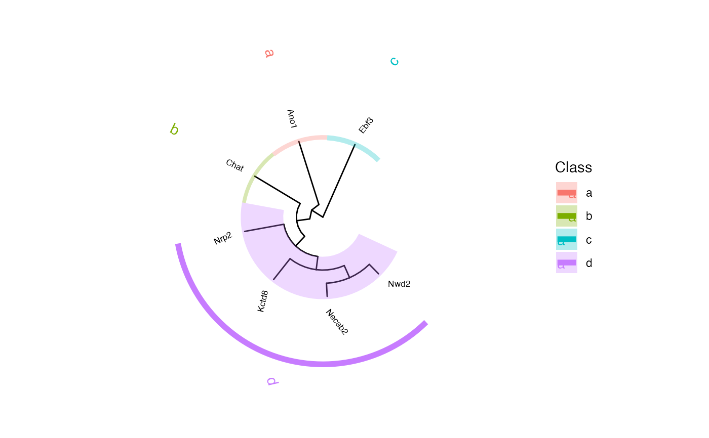

Create a tree from an STGrid object
# S4 method for STGrid
hc_tree(
object,
method = c("complete", "ward.D", "ward.D2", "single", "average", "mcquitty", "median",
"centroid"),
layout = c("circular", "rectangular", "slanted", "fan", "unrooted", "time-scale",
"two-dimensional"),
dist_method = "pearson",
branch_length = "none",
class_nb = 1,
class_name = NULL,
size = 2.25,
colors = NULL,
class_label = TRUE,
offset = 5,
offset.text = 1.5,
lab_fontsize = 3.88,
lab_barsize = 2,
geom_label = c("text", "label", "shadowtext"),
no_legend = FALSE
)The STGrid object
The agglomeration method to be used. See stats::hclust().
The layout to be used See ggtree::ggtree().
The method for distance computation. See stats::cor().
A variable for scaling branch, if 'none' draw cladogram. See ggtree::ggtree().
An integer indicating the desired number of groups.
A set of names for the classes.
The size of the labels.
A set of colors for the classes.
Whether to add class labels.
Offset of labels from the clade
Offset of text labels from the bar.
Label font size.
Bar label size.
Label fomat.
Whether to discard legend.
example_dataset()
#> |-- INFO : Dataset 11284233/files/Xenium_Mouse_Brain_Coronal_7g was already loaded.
p <- hc_tree(Xenium_Mouse_Brain_Coronal_7g, class_nb = 4, class_name = letters[1:4])
#> |-- INFO : Using complete method
#> |-- INFO : Using circular layout
print(p)

# Get classes:
p$tree_classes
#> $MOD1
#> [1] "Ano1"
#>
#> $MOD2
#> [1] "Chat"
#>
#> $MOD3
#> [1] "Ebf3"
#>
#> $MOD4
#> [1] "Kctd8" "Necab2" "Nrp2" "Nwd2"
#>